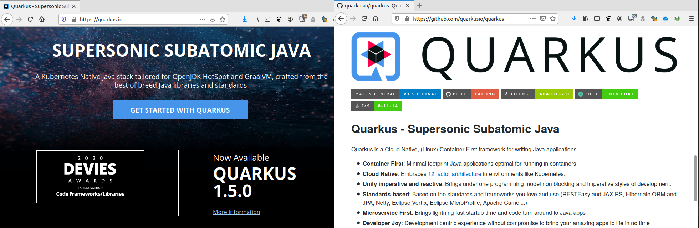

@Component
public class TestResultService {
@Autowired
private TestResultRepo testResultRepo;Quarkus as an alternative to Spring Boot
Starting point
App developed in hackathon
angular frontend, spring boot backend
backend required a Azure Web App plan B1
B1 costs ~ 11 EUR/month
there is a free plan providing 1 GB memory
this is too weak for spring boot
What is Quarkus?

fast startup time
small memory footprint
Quarkus basic concepts
Start here: https://code.quarkus.io/
Numbers …
| Spring Boot | Quarkus (JVM) | |
|---|---|---|
File size [1] | 31.898.389 byte | 38.908.086 byte |
Heap size/used | 611/~60 MB | 70/~40 MB |
Classes loaded | 9.729 | 5.798 |
Startup [2] | 1.24s | 655ms |
Beans and DI
Spring
Quarkus
@ApplicationScoped // mark as bean incl. scope definition
public class TestResultService {
@Inject
TestResultPushService testResultPushService;| I prefer constructor injection |
Configuration
@Data
@ConfigProperties(prefix = "message")
public class MessageConfiguration {
private String from;
private String text;
}application.properties
message.from=Krankenhaus
message.text=Wir freuen uns Ihnen mitteilen zu können, dass ...
# Use other message.from when running in test profile
%test.message.from=Testklinik (1)| 1 | Profile specific settings in same file, prefixed |
ORM
Testresult.java
@Data
public class TestResult extends PanacheMongoEntity {
String id;
Result status;
String contact;
public static List<TestResult> findByStatus(Result status) {
return list("status", status);
}Similar to Spring Data but not as powerful
No method-name-to-implementation magic
Conclusion
Quarkus looks like a promising alternative when using Kubernetes.
It requires less resources than Spring
but also has fewer, less powerful features

Links
wirvswirus backends
Photos from stocksnap.io
Night stars by Stephen Rahn
Burning Money by Jp Valery
Runner by The Lazy Artist Gallery
Coffee beans by Ylanite Koppens
Abstract flowing by Vidsplay
Records albums by Edu Grande
Containers by Frank Mckenna
Questions by Gerd Altmann on pixbay.com